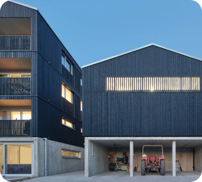
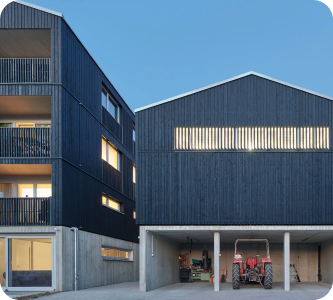
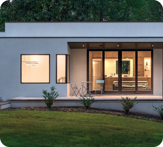
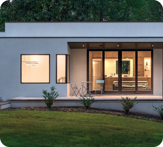

Commence your window design venture with Skygen
Driven by innovation and craftsmanship, SKYGEN gained its trust as the most reliable windows and doors supplier across Canada and United States. Working side by side with designers, general contractors, builders, architects and construction companies, we deliver impeccable service and solutions for everybody.
Our client is always our top priority. Each project has its own unique story and needs a personalized approach. We strive to be that companion who is always there for you. Let us take care of every detail, from manufacturing your customized design to installing it.

catalog

It is the successor of the acclaimed and widely used in the
construction industry MB-70 system. Due to its high strength
and durability, it creates rich constructional
possibilities.
It is used to make a wide range of joinery, including fixed
windows, casements, tilt and tilt and slide windows, single-
and double-leaf external doors and shop window solutions
with doors.
- the economical MB-79N E, with a single-component central gasket in the windows
- the MB-79N ST version with a two-component central gasket
- the MB-79N SI variant with the best thermal insulation and profiles equipped with insulating inserts and a two-component central gasket.
- Frame depth 70 mm
- Leaf depth 79 mm
- Glazing thickness 1,5 - 63 mm
- Frame 50,5mm
- Leaf from 33,5mm
- Max. door leaf dimensions (HxL) H to 2700mm, L to 1700mm
- Max. sash weight 180kg

MB-79N Casement is part of the MB-79N system used for
constructions such as: fixed, casement, tilt, tilt and turn
and tilt and slide windows, single and double-leaf external
doors, as well as shopfront solutions with doors. Its main
features are good thermal and acoustic insulation as well as
water and air tightness. The windows are adapted to the
stricter thermal insulation requirements of the European
Directive 2010/31/EU in force from 2021, allowing their use
in passive buildings.
Depending on particular needs, there are two variants of
aluminium sections to choose from with different technical
parameters: the ST variant (with a two-component central
seal) and the SI variant (with an additional insulation
insert inside the chamber between the thermal breaks).
Thanks to the wide range of sections and their rigidity,
this system allows for making large and heavy structures. It
is also characterised by excellent kinematics, which allows
for the construction of very narrow windows. MB-79N Casement
window profile alternatives: Top Hung and Side Hung
- Frame depth 70 mm
- Sash depth 79 mm
- Glazing thickness frame: 1,5 - 54 mm / sash: 10,5 - 63 mm
- Max. door leaf dimensions (H×L) H up to 2700 / 2500 mm, L up to 1400 / 2400 mm
- Max. sash weight (doors / windows) 180kg
It is also ideal for use in the renovation of industrial
buildings, where it allows the style of traditional steel
windows to be retained.
The system's versatility is ensured by the availability of
three different profile aesthetic variants: Classic, Ferro
and Cubic. The possibility of virtually free mixing of
frames, sashes and girders between variants makes it easy to
tailor the ideal configuration.
- Frame depth (window) 76-99 mm
- Sash depth (window) 86 mm
- Glazing thickness (fixed window / opening windows) up to 55 mm
- Max. door leaf dimensions (HxL) H to 1200mm, L to 2800mm
- Max weight of the sash (window) 170kg
The system is ideally suited to the production of windows,
doors and balcony doors.
Masterline 8 Functional offers three levels of insulation,
which makes it suitable for installation in buildings with
low energy needs, energy-efficient and even passive
buildings. Each individual will find something for
themselves. The system solution offers new options for
opening sashes of various dimensions, including one or
two-sash balcony doors with a low threshold.
Designers placed great emphasis on the maximum use of
daylight while maintaining the highest level of thermal
insulation.
- Frame depth (window) 77 mm
- Sash depth (window) 87 mm
- Glazing thickness (fixed window / opening windows) do 62 mm
- Frame (window) 53mm
- Sash (window) 20mm
- Max. door leaf dimensions (HxL) H to 2800mm, L to 1200mm
- Max weight of the sash (window) 200kg
It is characterised by delicate, slender profiles that use the highest quality aluminium. Attention is drawn to the perfectly balanced glass-to-frame ratio, which allows more natural light into the interior. Windows made using this system are sturdy and meet strict British safety standards. The thermal break used in the system means that the windows have excellent thermal and acoustic performance in the standard version. You can also choose the HI version for increased insulation.
The colours are gloss lacquered as standard, but a matt version is also available. The windows are available in a flush profile with espagnolettes and scissor hinges. It is possible to equip the windows with special fittings that make daily use, cleaning and maintenance easier. This is the so-called easy-clean feature. Different window sizes and glazing units are available depending on the selected sashes. Casement windows are mainly dedicated to the British market, but they will certainly also find their enthusiasts in Poland.
- Glazing thickness 14-44mm
- Leaf depth (window) 70 mm
- Frame depth (window) 70mm
- Frame (window) 15mm
- Leaf (window) 50mm
- Max. dimensions of it-and-turn window (Top Hung)H to 1800mm, L to 1800mm
- Max. weight of the leaf (window) 100kg
The structure presented here is a version of MB-SR50N
featuring enhanced thermal insulation performance.
The system is designed for the construction and execution of
flat, light-weight curtain walls of the suspended or filling
type, roofs, skylights and other structures. The shapes of
profiles enable selection of mullion and transom profiles
which flush with each other on the inside surface of the
façade.
The MB-SR50N HI system features basic characteristics and possibilities inherent in the base construction MB-SR50N. The thermal insulation zone deserves a particular mention, though. Here, special two-component insulators have been applied. They are based on a HPVC insulator (or a set of insulators of appropriate width), which makes it possible to drive screws with high accuracy during the installation process at the building site. On both lateral surfaces of the insulator additional elements made of flexible material are attached (glued on), which enhance thermal insulation performance and limit the air flow in the space separating the infills of the façade. The insulator built in this way enables maintaining convenience and accuracy of mounting of a traditional façade, ensuring at the same time that very good thermal insulation parameters are attained – the heat transfer coefficient, depending on the applied profiles and accessories spans between 0,94 to ,.94 W/m2K. Likewise in the base version of the façade, the structure allows for installation of different types of infills, including glazing of large dimensions and two-chamber insulating glazing units. With regard to active elements, the MB-70HI doors and windows featuring enhanced thermal insulation performance are particularly recommended for façades of the HI series.
- Air tightness AE 1200
- Watertightness RE 1500, EN 12154
- Impact resistance I5/E5, EN 14019
- Thermal insulation Uf >0,85, W/(m2K)
The MB-SR50N HI system was subjected to thorough testing performed by the Building Research and Testing Institute IFT Rosenheim and attained very high technical parameters.
As regards the declaration of conformity for vertical façades based on the MB-SR50N HI system, a harmonized European Standard PN-EN 13830 “Curtain Walling. Product Standard” has been applied as a reference document.
- Air infiltration class AE 1200, EN 12152
- Rainwater tightness class RE1500, EN 12154
- Resistance to wind load 2.4 kN/m2, EN 13116:2002
- Impact resistance class I5/E5, PN-EN 14019
Facade system designed for construction of lightweight cladding systems – flat curtain walls, infill walls and other spatial structures. The 60 mm wide mullions and transoms enable construction of aesthetic facades with exposed narrow division lines while ensuring durability and strength of the structure. The system enables flush installation of the mullions and transoms on the outside surface and offers a choice of external appearances. The advantages of MB-SR60N system include very good technical parameters, freedom of spatial arrangement and a wide variety of openable elements mounted in the facade. Particularly noteworthy is the MB-SR60N HI+ version of the system, which includes special thermal breaks and features improved thermal insulation performance. There is also a version without face caps visible from the outside - MB-SR60N EFEKT. Owing to an extensive range of profiles and accessories to choose from, the architects and designers can implement even the most daring aluminium-glass facade designs. For horizontally and vertically faceted walls special overlay profiles are used, accompanied with specially shaped pressure bars and face caps, which eliminate the restrictions in spatial arrangement of the building and the need to use special angular mullions. Modern accessories and connectors enable increasing the allowable load and thus the facade infill module can weigh up to 1,100 kg.
- Air tightness up to AE 1350, EN 12152
- Watertightness up to RE 1500, EN 12154
- Impact resistance 2.4 kN/m, EN 13116
- Thermal insulation Uf I5/E5, EN 14019
- angular connections give freedom of arrangement of aluminium cladding
- sharp edged mullions and transoms give the facade support frame the look of a uniform lattice
- he different facade styles and a variety of overlay profiles of different shapes enable obtaining a number of different facade appearance variants
- good thermal insulation owing to a wide glazing range and the available thermal breaks and accessories
- profiles can be bent to suit curved structures
The MB-SR50N HI system was subjected to thorough testing performed by the Building Research and Testing Institute IFT Rosenheim and attained very high technical parameters.
- Air permeability: up to AE 1350, EN 12152
- Watertightness up to RE 1500, EN 12154
- Resistance to wind load: 2.4 kN/m2, EN 13116
- Impact resistance: I5/E5, EN 14019
- Sound insulation: Rw up to 45 dB (depending on the infill used)
The MB-SR50N EFEKT system is used for the construction of lightweight curtain walls of a hanging and filling type as well as roofs, skylights and other spatial constructions.
Its supporting structure is based on a modern and tested and
proven mullion and transom aluminium system MB-SR50N, which
provides a wide range of profiles to choose from and the
possibility of selecting sections so that the surface of
mullions and transoms is flush with the internal side of
façade, and thus its aesthetic joint with development
elements inside the building is ensured. It also ensures
compatibility with other constructions based on the wide
range of products offered by Aluprof SA.
MB-SR50N EFEKT is a façade that provides a uniform external
appearance of a smooth glass wall divided by the structure
of vertical and horizontal lines of 2 cm, thanks to the use
of a special system for fixing panes to mullions and
transoms. The gaps between glass fields of the façade are
filled with a special silicon binder to ensure high
tightness of the construction and enhance its insulation
properties.
One of the basic advantages of the MB-SR50N EFEKT façade is
the rich capabilities of glazing: the wide range of infills
available in the catalogue includes one- or two-chamber
glass, as well as non-transparent panels based on complex
glass. The real novelty, and undoubtedly the hit of this
type of façades, is the possibility of using glass units
with a laminated pane. The precisely developed infill
mounting system allows the flexible and economic adjustment
to the technical requirements of a specific project – it is
diverse depending on glass weight and includes solutions
that enable loads to be transferred from panes to profiles
in such a manner that a load capacity of up to 450 kg can be
obtained. We have two standard pane mounting variants at our
disposal: with the use of continuous or point frame, which
allows the manufacturing process and price to be optimised.
Another big advantage of the system is the fact that it has
recommendations from three world leading suppliers of
constructional and weather-resistant silicones: Dow Corning,
Sica and Tremco-Ilbruck, which not only enhance the prestige
of this solution, but also ensure and guarantee the
resistance and tightness of the construction, as well as
easy access to technologies for glazing companies. In this
system, the possibility of using silicon in different
colours is also worthy of attention, as it significantly
widens the spectrum for the creation of façade aesthetics.
Façades made in the MB-SR50N EFEKT system have excellent
utility parameters. Their use allows not only the desired
façade aesthetics to be obtained, but also very high thermal
insulating power, which is, due to a strong, worldwide trend
oriented at the limitation of the energy consumption of
buildings, one of the main criteria for assessment of
contemporary curtain walls.
- Air tightness AE 1200 Pa
- Watertightness RE 1200 Pa, EN 12154
- Impact resistance I5/E5, EN 14019
- Wind tightness up to 2400 Pa
- Air permeability: class AE 1200 Pa
- water tightness class RE 1200 Pa
- wind resistance up to 2400 Pa
- impact strength class I5/E5

The system is designed for the construction and execution of flat, light-weight curtain walls of the suspended or filling type, roofs, skylights and other structures.
Among characteristics of the MB-SR50N system is a wide choice of mullion profiles (between 65 mm and 325 mm) and transom profiles (between 5 mm and 189.5 mm) and modern solutions designed for accessories and connecting members. Such features allow for a wider range of loads which are being carried – an infill in a fixed module of the façade may weigh up to 1100 kg. The MB-SR50N system gives considerable freedom while laying out façade fixing points. A wide glazing range allows for application of glazing of large dimensions and two-chamber insulating glazing units.
Application of a continuous thermal barrier made of insulating material called ”HPVC” and profiled (grooved) EPDM glazing gaskets makes it possible to obtain proper thermal insulation class and reduce to a minimum vapour condensation on aluminium elements.
Among aesthetic varieties of the MB-SR50N system, likewise in older mullion / transom curtain walls are the following versions: PL (so-called “horizontal and vertical line” where an emphasis is placed on either horizontal or vertical division) and a semi-structural façade of the EFEKT type. A particular attention should be drawn to the version featuring enhanced thermal insulation performance, i.e. MB-SR50N HI, in which special two-component insulators have been applied.
The MB-SR50N system enables installation in the façade of various types of windows and doors, including windows designed for the façades incorporating an awning window and a roof window. A particularly good visual effect is achieved when façade-integrated windows based on the MB-SR50 IW solution are installed in this system.
Lintel and sill belts of the façade, due to a sandwich-type structure in which non–flammable materials have been used, such as mineral wool and plasterboards, may obtain, like in the case of other Aluprof systems, fireproof classification EI30 and EI60, depending on the structure.
In order to construct broken walls, both in their vertical and horizontal sections, there have been used special overlapping profiles and properly shaped clamping and concealing strips with the effect that there are no limitations whatsoever as to shaping the building body and the need to use special corner mullions is eliminated.
Heavy-duty façade consoles, adapted to the maximum weights of the infills that can be used with this system.
As regards the declaration of conformity for vertical façades based on the MB-SR50N system, a harmonized European Standard PN-EN 13830 “Curtain Walling. Product Standard” has been applied as a reference document.
Aluprof obtained positive results of hurricane tests conducted for the MB-SR50N system in accordance with ASTM guidelines and Florida Building Code TAS 201-94, TAS 202-94 and TAS 203-94.
- Thermal insulation Uf >0,6, W/(m2K)
- Air tightness AE 1200
- Watertightness RE 1200, EN 12154
- Impact resistance I5/E5, EN 14019
- Air Permeability AE 1200, EN 12152
- Watertightness RE 1200, EN 12154
- Windload resistance 2,4 kN/m2, EN 13116
- Impact resistance I5/E5, EN 14019
- Thermal insulation (Uf) od 0,7 W/(m2K)
 



Colored uPVC windows offer a versatile alternative to traditional wood, combining aesthetics with low maintenance and energy efficiency. Foil-wrapped uPVC windows, using a heat bonding process, closely mimic the texture and color of wood, providing a durable and authentic appearance. Advantages include authentic wood grain, durability (30+ years lifespan), low maintenance, and excellent energy efficiency.
Foil-wrapped uPVC windows also provide design versatility, allowing customization to match individual preferences. While repairing uPVC foil is possible, painting uPVC windows is generally not recommended due to potential drawbacks like reduced lifespan, maintenance issues, and warranty concerns.
 

PHI vs. PHIUS
PHI and PHIUS, though sharing the goal of promoting energy-efficient construction, diverge in their approaches and standards due to varied climate conditions. PHI's European Standard caters to the international market, while PHIUS tailors its American Standard to North American climate needs.Key Similarities and Differences
While both certifications use similar metrics, variations exist in measurement units and criteria. Airtightness, heating and cooling requirements, and energy calculations differ, demanding architects' awareness to ensure compliance with specific standards.Benefits of PHI and PHIUS-Certified Windows
PHI and PHIUS-certified windows offer a plethora of advantages, contributing to a greener environment and reducing energy consumption. These windows play a pivotal role in achieving Passive House certification, enhancing overall energy efficiency, and ensuring optimal thermal comfort. SKYGEN Windows emerged as a key player, offering high-quality, energy-efficient windows aligned with PHIUS certification standards. With a commitment to sustainability and innovation, SKYGEN provides architects with a diverse range of windows designed to optimize energy performance and enhance comfort. Architects and builders find a clear roadmap to energy-efficient and sustainable building design through PHI and PHIUS certifications. This guide unravels the nuances, empowering architects to make informed decisions. With support from companies like SKYGEN, providing high-quality, certified windows, architects can seize the window of opportunity to elevate their Passive House projects.